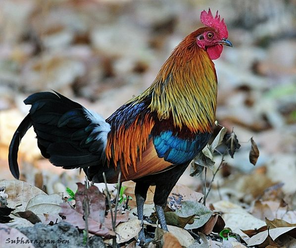

Chicken
Gà
Gà hay gà nhà, kê là một loài chim đã được con người thuần hoá cách đây hàng nghìn năm. Một số ý kiến cho rằng loài này có thuỷ tổ từ loài chim hoang dã ở Ấn Độ và loài gà rừng lông đỏ nhiệt đới ở vùng Đông Nam Á. Trong thế giới loài chim, gà là loài vật có số lượng áp đảo nhất với 24 tỉ cá thể.
Khối lượng:
Gà vảy cá: 620 g, Gà tre bốt: 850 g, Ermellinata di Rovigo: 3,4 – 3,9 kg
Tên khoa học:
Gallus gallus domesticus